OS & 시스템 관리
DB 이전 — MySQL · MS-SQL
서버 교체와 장애 복구 때 DB를 새 서버로 옮긴 절차입니다. MySQL은 DB마다 다른 문자셋(euckr·utf8)을 그대로 유지하는 것이, MS-SQL은 파일 경로 재배치와 계정 연결이 핵심이었습니다. 실제로 쓰던 명령에 검증·보안 단계를 더해 정리했습니다.
서버·DB·계정 이름은 예시이며 화면도 예시입니다. 비밀번호는 모두 지웠습니다.
1. 전체 흐름
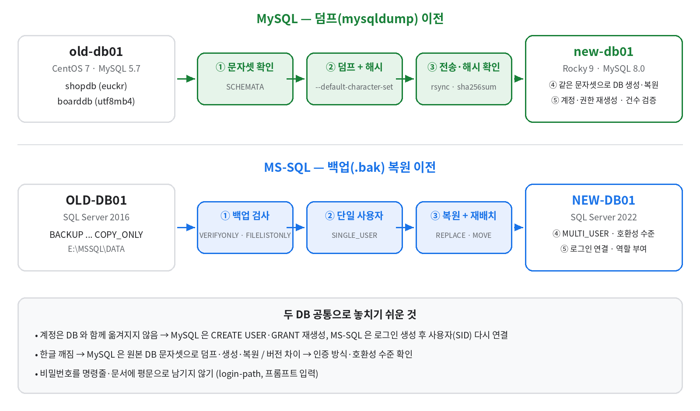
이전 전 체크리스트
- 버전: 원본·대상 DB 버전 (MySQL 5.7 → 8.0, SQL Server 2016 → 2022 처럼 올라갈 때 차이점 확인. 반대로 낮은 버전으로는 못 옮김)
- 용량과 시간: 덤프·백업 크기, 전송·복원 예상 시간 → 서비스 중지 시간 산정
- 쓰기 중지: 최종 이전 때는 애플리케이션을 멈추거나 읽기 전용으로 둔 뒤 마지막 덤프·백업
- 계정 목록: 애플리케이션이 쓰는 DB 계정, 접속 허용 호스트, 권한
- 접속 정보 변경: 애플리케이션 설정의 DB 주소 (가능하면 DNS 별칭을 바꿔 애플리케이션 수정 없이 전환)
- 되돌리기: 문제 시 원본으로 돌아갈 수 있게 원본은 일정 기간 그대로 보존
2. MySQL — 문자셋 확인
오래된 서비스는 DB마다 문자셋이 달랐습니다(euckr, utf8, utf8mb4). 덤프할 때와 복원할 때 원본 DB의 문자셋을 그대로 지정하지 않으면 한글이 ???나 깨진 문자로 저장됩니다. 그래서 덤프 전에 문자셋부터 확인합니다.
# 비밀번호를 명령줄(-p비밀번호)에 쓰면 history 와 ps 에 남음 → 접속 정보를 암호화 저장해서 사용
mysql_config_editor set --login-path=old --socket=/tmp/mysql.sock --user=admin --password
mysql_config_editor print --all
# DB 별 문자셋
mysql --login-path=old -e "SELECT schema_name, default_character_set_name, default_collation_name
FROM information_schema.SCHEMATA
WHERE schema_name NOT IN ('mysql','information_schema','performance_schema','sys');"
# 서버 기본값
mysql --login-path=old -e "SHOW VARIABLES LIKE 'char%'; SELECT VERSION();"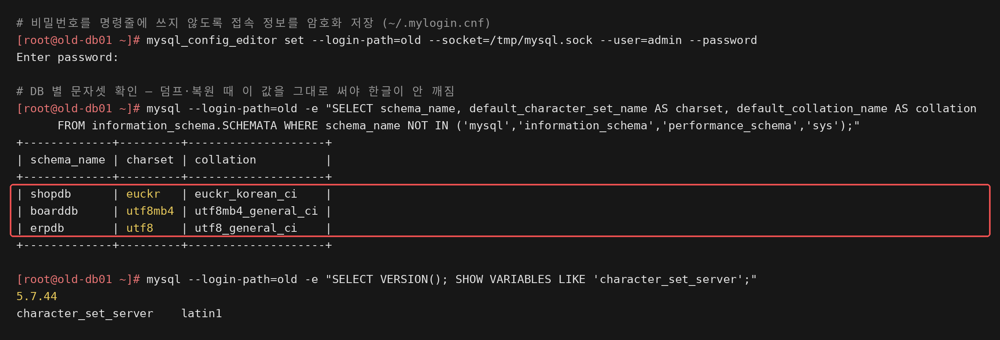
-S /tmp/mysql.sock으로 소켓을 지정합니다. -h 127.0.0.1은 소켓 대신 TCP로 접속하므로 계정의 허용 호스트('admin'@'localhost'와 'admin'@'127.0.0.1'는 다른 계정)가 맞아야 합니다.3. MySQL — 덤프
# InnoDB: 잠금 없이 일관된 시점으로 (--single-transaction)
# 프로시저·트리거·이벤트 포함, 바이너리 컬럼 안전하게 (--hex-blob)
mysqldump --login-path=old --single-transaction --routines --triggers --events --hex-blob \
--default-character-set=euckr shopdb | gzip > /backup/20261118_db_shopdb.sql.gz
mysqldump --login-path=old --single-transaction --routines --triggers --events --hex-blob \
--default-character-set=utf8mb4 boarddb | gzip > /backup/20261118_db_boarddb.sql.gz
# 정상 종료 확인: 마지막 줄이 "-- Dump completed on ..." 이어야 함
zcat /backup/20261118_db_shopdb.sql.gz | tail -1
# 무결성 해시 → 새 서버로 전송
cd /backup && sha256sum 20261118_db_*.sql.gz > 20261118.sha256
rsync -avP /backup/20261118_* new-db01:/backup/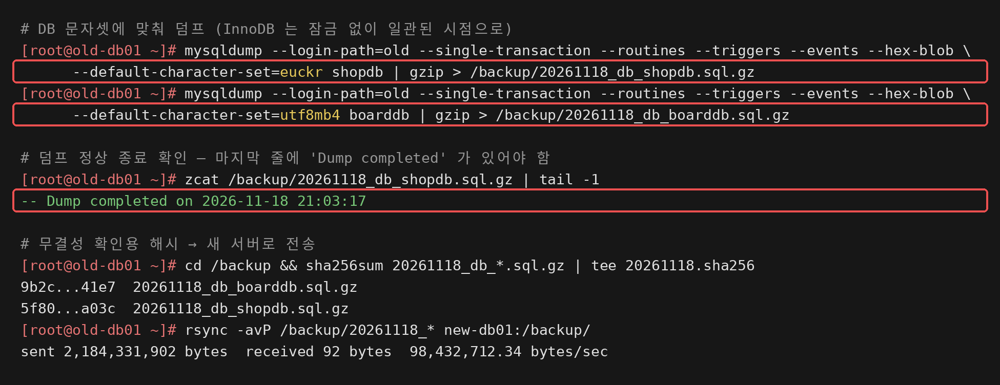
| 옵션 | 이유 |
|---|---|
--default-character-set= | 원본 DB 문자셋과 같게. 다르면 한글이 변환되며 깨짐. MySQL 표기는 euckr (밑줄 없음) |
--single-transaction | InnoDB 테이블을 잠그지 않고 덤프 시작 시점 기준으로 일관되게. MyISAM 테이블이 있으면 그 테이블은 일관성이 보장되지 않으므로 쓰기를 멈추고 덤프 |
--routines --triggers --events | 프로시저·함수·이벤트는 기본으로 빠짐 (트리거는 기본 포함, 명시) |
--hex-blob | BLOB 바이너리가 문자셋 변환으로 손상되지 않게 |
--set-gtid-purged=OFF | 원본에 GTID가 켜져 있으면, 복원 시 GTID 오류를 피하려고 추가 |
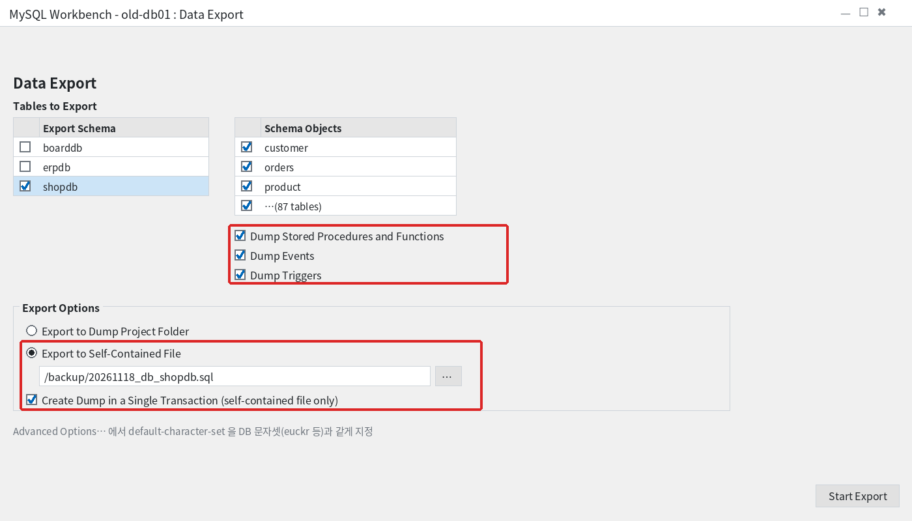
4. MySQL — 복원과 검증
# 1) 전송 무결성
cd /backup && sha256sum -c 20261118.sha256
# 2) 원본과 같은 문자셋으로 DB 를 먼저 생성 (덤프에 CREATE DATABASE 가 없으므로)
mysql --login-path=new -e "CREATE DATABASE shopdb DEFAULT CHARACTER SET euckr COLLATE euckr_korean_ci;"
# 3) 복원 — 덤프할 때와 같은 문자셋으로 읽기
zcat 20261118_db_shopdb.sql.gz | mysql --login-path=new --default-character-set=euckr shopdb
# 4) 검증: 테이블 수, 주요 테이블 건수, 한글 데이터
mysql --login-path=new -N -e "SELECT COUNT(*) FROM information_schema.TABLES WHERE table_schema='shopdb';"
mysql --login-path=new --default-character-set=euckr shopdb -e "SELECT COUNT(*) FROM orders; SELECT name FROM product LIMIT 5;"
mysqlcheck --login-path=new --check shopdb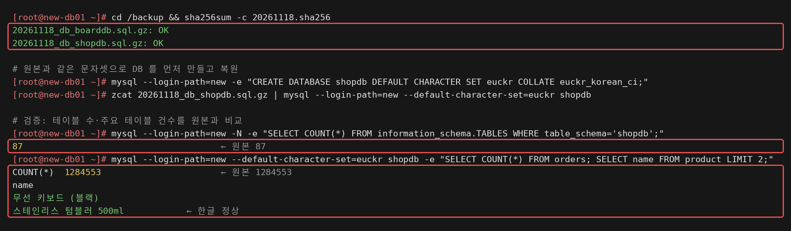
계정·권한 옮기기
예전에는 mysql 시스템 DB를 통째로 덤프해 복원하기도 했는데, 버전이 다르면 시스템 테이블 구조가 달라 깨질 수 있습니다. 같은 버전끼리가 아니면 계정 생성 구문과 권한만 뽑아서 다시 만듭니다.
# 원본: 계정별 CREATE USER + GRANT 구문 뽑기
mysql --login-path=old -N -e "SELECT CONCAT('SHOW CREATE USER ',QUOTE(user),'@',QUOTE(host),';
SHOW GRANTS FOR ',QUOTE(user),'@',QUOTE(host),';') FROM mysql.user
WHERE user NOT IN ('root','mysql.sys','mysql.session','mysql.infoschema')" \
| mysql --login-path=old -N | sed 's/$/;/' > /backup/20261118_users.sql
# 새 서버 적용 → 애플리케이션 서버에서 접속 시험
mysql --login-path=new < /backup/20261118_users.sql
mysql -h new-db01 -u shop_app -p shopdb -e 'SELECT 1'
# (같은 버전끼리 mysql DB 를 통째로 복원했다면) 권한 다시 읽기
mysql --login-path=new -e "FLUSH PRIVILEGES;"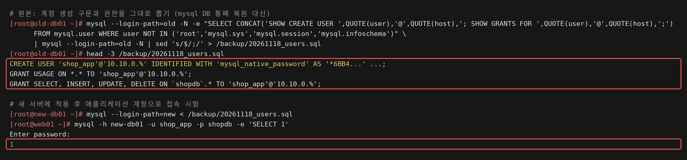
- 인증 방식: 8.0 기본값은
caching_sha2_password라 오래된 PHP·드라이버가 접속하지 못할 수 있습니다. 위처럼 원본 구문을 그대로 쓰면 기존 방식이 유지되고, 장기적으로는 드라이버를 올립니다. - utf8: 8.0에서
utf8은utf8mb3의 별칭입니다. 이모지 등 4바이트 문자가 필요하면utf8mb4로 전환을 따로 계획합니다. - lower_case_table_names: 8.0은 DB 초기화 전에만 정할 수 있습니다. 원본이 대소문자를 구분하지 않았다면 새 서버 설치 단계에서 맞춥니다.
- sql_mode: 더 엄격해져
0000-00-00날짜, GROUP BY 쿼리 등이 오류가 날 수 있으므로 애플리케이션 시험이 필요합니다.
5. MS-SQL — 원본 백업
-- OLD-DB01: 정기 백업 순서를 깨지 않도록 COPY_ONLY, 손상 검사용 CHECKSUM
BACKUP DATABASE appdb
TO DISK = N'D:\DBBACKUP\appdb_20261118.bak'
WITH COPY_ONLY, COMPRESSION, CHECKSUM, STATS = 10; -- COMPRESSION 은 Express 버전에서 미지원
GO.bak 파일을 새 서버로 복사한 뒤(robocopy + Get-FileHash로 해시 비교), SQL Server 서비스 계정이 그 폴더를 읽을 수 있는지 확인합니다. 읽기 권한이 없으면 복원 때 "운영 체제 오류 5(액세스 거부)"가 납니다.
6. MS-SQL — 복원
① 백업 검사와 파일 정보 확인
-- 백업 파일이 정상인지
RESTORE VERIFYONLY FROM DISK = N'D:\DBBACKUP\appdb_20261118.bak' WITH CHECKSUM;
-- 백업 안의 논리 파일 이름과 원본 경로 (MOVE 에 사용)
RESTORE FILELISTONLY FROM DISK = N'D:\DBBACKUP\appdb_20261118.bak';
GO
-- 대상 서버에 이미 같은 DB 가 있다면 현재 파일 위치 확인
USE appdb;
GO
SELECT name AS LogicalName, physical_name AS PhysicalFileName, type_desc AS FileType
FROM sys.master_files WHERE database_id = DB_ID('appdb');
GO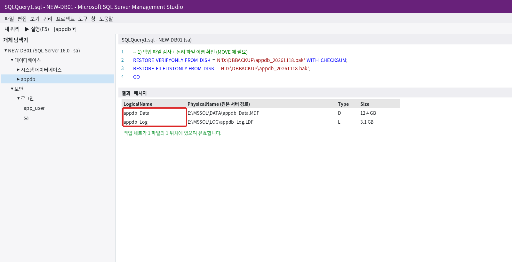
② 단일 사용자 → 복원 → 다중 사용자
USE master;
GO
-- 대상에 같은 DB 가 있을 때만: 접속 중인 세션을 끊고 혼자 쓰기
ALTER DATABASE appdb SET SINGLE_USER WITH ROLLBACK IMMEDIATE;
GO
RESTORE DATABASE appdb
FROM DISK = N'D:\DBBACKUP\appdb_20261118.bak'
WITH REPLACE, -- 기존 DB 덮어쓰기
MOVE N'appdb_Data' TO N'D:\MSSQL\DATA\appdb_Data.MDF', -- 데이터 파일 새 경로
MOVE N'appdb_Log' TO N'D:\MSSQL\LOG\appdb_Log.LDF', -- 로그 파일 새 경로
STATS = 10;
GO
ALTER DATABASE appdb SET MULTI_USER;
GOGUI로는 SSMS 데이터베이스 → 데이터베이스 복원에서 같은 설정을 합니다.
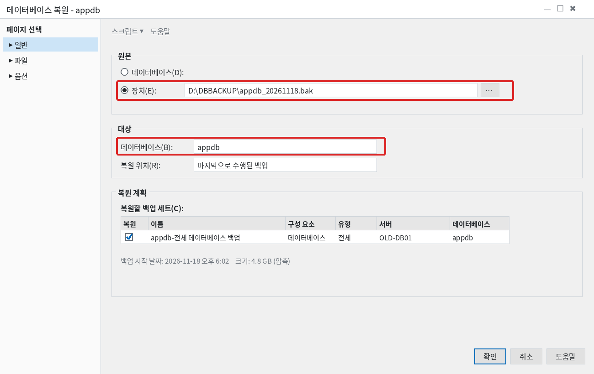
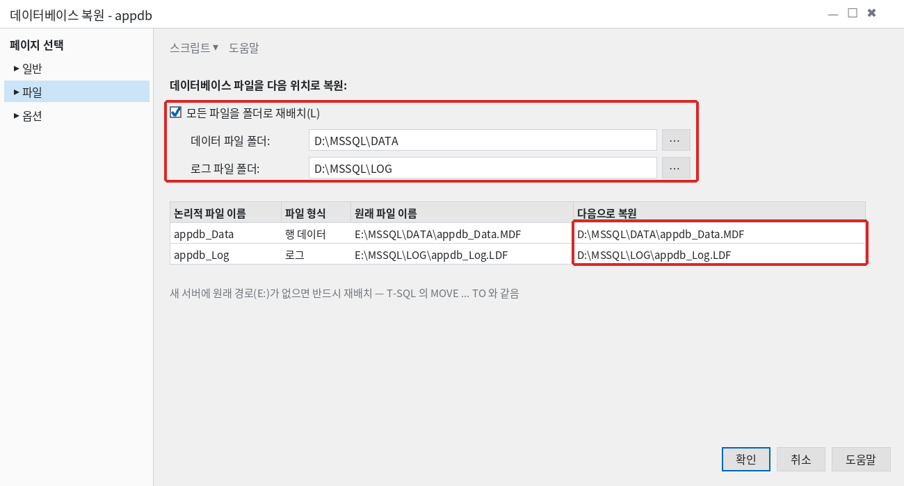
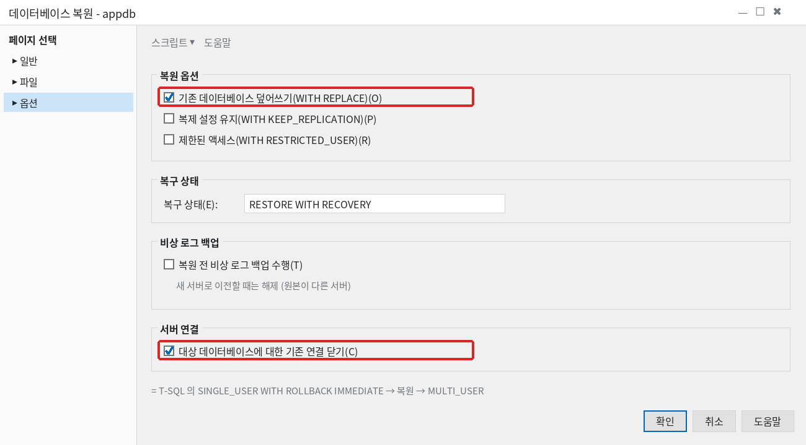
③ 복원 후 정리
-- DB 무결성 검사
DBCC CHECKDB (appdb) WITH NO_INFOMSGS;
-- DB 소유자 정리 (원본 서버의 계정이 소유자로 남아 있는 경우)
ALTER AUTHORIZATION ON DATABASE::appdb TO sa;
-- 호환성 수준: 복원한 DB 는 원본 버전 수준 그대로. 애플리케이션 시험 후 올림
SELECT name, compatibility_level FROM sys.databases WHERE name = 'appdb';
ALTER DATABASE appdb SET COMPATIBILITY_LEVEL = 160; -- SQL Server 2022
GO7. MS-SQL — 계정 연결과 권한
DB 안의 사용자는 백업과 함께 옮겨지지만, 서버의 로그인은 옮겨지지 않습니다. 사용자와 로그인은 SID로 연결되는데, 새 서버에서 같은 이름으로 로그인을 만들어도 SID가 달라서 "고아 사용자"가 됩니다. 이 상태면 로그인은 되지만 DB에 접근할 수 없습니다.
-- 1) 새 서버에 로그인 생성
CREATE LOGIN app_user WITH PASSWORD = N'********', DEFAULT_DATABASE = appdb, CHECK_POLICY = ON;
GO
-- 2) 고아 사용자 찾기
USE appdb;
GO
SELECT dp.name AS db_user, dp.sid
FROM sys.database_principals dp
LEFT JOIN sys.server_principals sp ON dp.sid = sp.sid
WHERE dp.type IN ('S','U') AND sp.sid IS NULL
AND dp.name NOT IN ('guest','dbo','INFORMATION_SCHEMA','sys');
-- 3) 사용자를 새 로그인에 다시 연결
ALTER USER app_user WITH LOGIN = app_user;
GO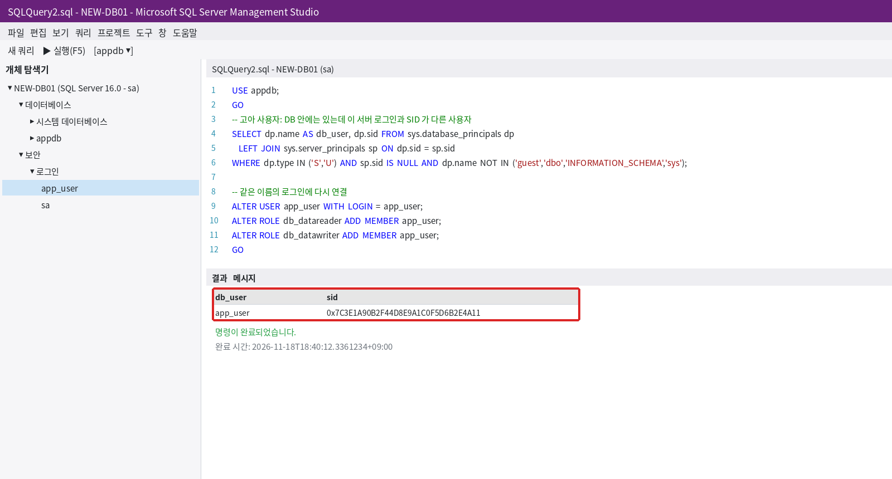
권한 부여
USE appdb;
GO
-- 조회(SELECT) / 수정(INSERT·UPDATE·DELETE)
ALTER ROLE db_datareader ADD MEMBER app_user;
ALTER ROLE db_datawriter ADD MEMBER app_user;
-- 테이블·스키마 생성·변경이 필요한 경우만
ALTER ROLE db_ddladmin ADD MEMBER app_user;
-- 모든 권한 (꼭 필요할 때만)
-- ALTER ROLE db_owner ADD MEMBER app_user;
GO
-- SSMS 개체 탐색기에서 DB 목록이 안 보일 때
USE master;
GO
GRANT VIEW ANY DATABASE TO app_user;
GOEXEC sp_addrolemember N'db_datareader', N'app_user';를 썼습니다. 동작은 같지만 Microsoft가 사용 중단 예정으로 안내하고 있어 ALTER ROLE ... ADD MEMBER로 바꿨습니다.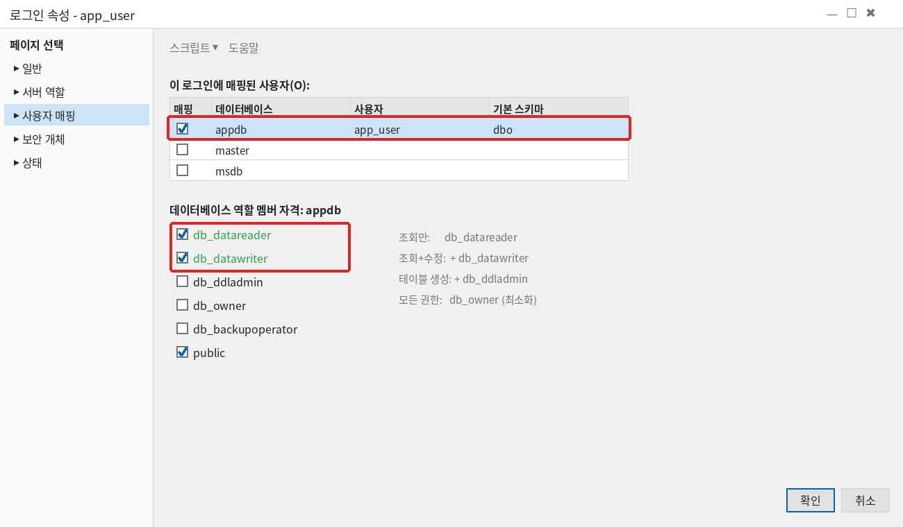
sp_help_revlogin 스크립트로 CREATE LOGIN ... WITH PASSWORD = 0x... HASHED, SID = 0x... 구문을 뽑아 새 서버에서 실행합니다. 이렇게 하면 고아 사용자가 생기지 않고 애플리케이션 비밀번호도 바꿀 필요가 없습니다.8. 전환과 마무리
- 애플리케이션 쓰기 중지 (점검 공지, 서비스 중지 또는 읽기 전용)
- 최종 덤프·백업 → 전송 → 복원 → 검증 (건수·무결성 검사)
- 애플리케이션 DB 접속 주소 변경 또는 DNS 별칭 전환
- 애플리케이션 기능 시험 (로그인, 조회, 저장, 한글 입력)
- 새 서버 백업 작업 등록 (백업 솔루션·정기 덤프)
- 원본 DB는 일정 기간 중지 상태로 보존 후 정리
9. 트러블슈팅
| DB | 증상 | 원인 및 해결 |
|---|---|---|
| MySQL | 한글이 ??? 또는 깨진 글자 | 덤프·DB 생성·복원 중 한 곳이라도 문자셋이 원본과 다름 → 세 곳 모두 원본 DB 문자셋으로 |
Character set 'euc_kr' is not a compiled character set | MySQL 문자셋 이름은 euckr | |
Can't connect ... through socket | 소켓 경로가 기본값과 다름 → -S /tmp/mysql.sock 또는 login-path에 socket 지정 | |
Access denied (복원 후 애플리케이션) | 계정 미생성 또는 허용 호스트 불일치('user'@'10.10.0.%'), 8.0 인증 방식 미지원 드라이버 | |
ERROR 1840 ... GTID_PURGED | GTID가 켜진 원본 덤프 → --set-gtid-purged=OFF로 다시 덤프 | |
복원 중 MySQL server has gone away | 큰 INSERT 문 → 대상 서버 max_allowed_packet 상향 (예: 256M) | |
| MS-SQL | 복원 시 "운영 체제 오류 5" | SQL Server 서비스 계정이 .bak 폴더나 데이터 폴더를 읽고 쓸 권한 없음 |
| "데이터베이스가 사용 중이므로 단독으로 액세스할 수 없습니다" | 접속 세션 남아 있음 → SINGLE_USER WITH ROLLBACK IMMEDIATE 또는 GUI "기존 연결 닫기" | |
| "파일을 사용할 수 없습니다" / 경로 오류 | 원본 경로(E:)가 새 서버에 없음 → MOVE ... TO로 재배치 | |
| "이 백업은 ... 버전에서 생성되어 복원할 수 없습니다" | 더 높은 버전의 백업을 낮은 버전에 복원 불가 → 대상 버전을 맞추거나 데이터 내보내기 방식 사용 | |
| 로그인은 되는데 DB 접근 불가 (오류 916 등) | 고아 사용자 → ALTER USER ... WITH LOGIN으로 연결 | |
| 복원 후 DB가 "단일 사용자"로 남음 | ALTER DATABASE appdb SET MULTI_USER; 실행 누락 |